Mitä tänään teemme
Tarina ensin, tekoäly vasta sitten.
Teet lyhyen pystyvideon järjestöllesi. Kenenkään kasvoja ei tarvitse näyttää: päähenkilönä on itse luotu hahmo, jota ei voi tunnistaa, ja kertojana oma äänesi. Tekoäly tekee kuvat ja liikkeen – tarina, tunne ja ääni tulevat sinulta.
Tärkeintä on kokeilu
Valmista videota ei tarvitse saada tänään. Tärkeintä on oppia, miten Vids toimii, jotta voit jatkaa itsenäisesti.
Esimerkki: Google Vidsillä tehty video TeOs-hankkeelle.
📋 Ennen kuin aloitat
- Käytä tietokonetta ja Chrome-selainta. Puhelimella voi katsoa valmiita videoita, mutta ei muokata.
- Kirjaudu järjestösi Google-tilillä ja avaa vids.google.com.
- Avaa uusi video kirjoittamalla osoiteriville vids.new. Jos oikean reunan valikossa näkyy AI Video, tekoälyominaisuudet ovat käytössä. Jos ei, tee harjoitukset 1, 2 ja 4 – arkistokuvat ja oma ääni toimivat ilman tekoälyäkin.
- Älä käytä videoissa henkilötietoja äläkä tunnistettavia ihmisiä ilman lupaa.
- Tutustu Google for Nonprofits -ohjelmaan, jos järjestönne ei vielä käytä sitä. Siitä järjestöt voivat saada mm. Google Workspacen, Ad Grants -mainostukea ja YouTuben järjestöohjelman – tarkista, täyttääkö järjestönne ehdot.
Google Workspace yleishyödyllisille yhteisöille – kuukausikiintiöt (lokakuussa 2026)
| Ominaisuus | Kiintiö |
|---|---|
| Tekoälyvideoklipit | 20 / kk |
| Kuvien luonti ja muokkaus (yhteinen kiintiö Slidesin ja Docsin kanssa) | 5 / kk |
| Tekoälyavatarit (puhuvat suomea) | 10 / kk |
| Musiikki: 30 s klipit / kokonaiset kappaleet (n. 3 min) | 20 / 10 kk |
| Auta minua luomaan | rajaton |
| Taustanpoisto | rajaton |
| Tekoälyselostus (ei suomeksi) | rajaton |
Lähde: Googlen ohje, Gemini-ominaisuuksien saatavuus Vidsissä
Käytännössä: saat tehdä 20 tekoälyvideoklippiä kuukaudessa, ja kuvia saat luoda vain viisi. Muu – arkistokuvat, oma ääni, tekstit, logo, siirtymät – ei kuluta kiintiötä lainkaan.
💡 Muista: tämä sivu ei tallenna mitään. Kopioi vastauksesi lopuksi napilla talteen – tarvitset niitä harjoituksessa 2.
Näin hyvä videoprompti rakentuu
Tekoäly ei näe päähäsi. Mitä tarkemmin kerrot, sitä vähemmän se arvaa – ja sitä vähemmän kiintiötä kuluu uusintoihin. Hyvä prompti vastaa näihin:
- 1Mitä kuvassa on
- 2Mitä tapahtuu
- 3Missä
- 4Kamera
- 5Valo ja tunnelma
- 6Mitä EI saa olla
Tee klippi
1 klippi = 1/20 kuukaudesta- Kirjoita osoiteriville vids.new. Valitse ylhäältä Portrait (pysty) ja sitten Blank vid.
- Avaa oikean reunan valikosta AI Video. Laatikon yläreunassa pitää olla valittuna Create.
- Säädä laatikon alareunasta klipin kesto (esim. Omni · 720p · pysty · 10s). Kiintiö lasketaan klippeinä, ei sekunteina.
- Kopioi alla oleva prompti, täytä hakasulkeet tarinasi alulla ja paina sinistä nuolta.
- Katso tulos. Jos se melkein osuu, korjaa yksi asia promptissa ennen kuin teet uuden.
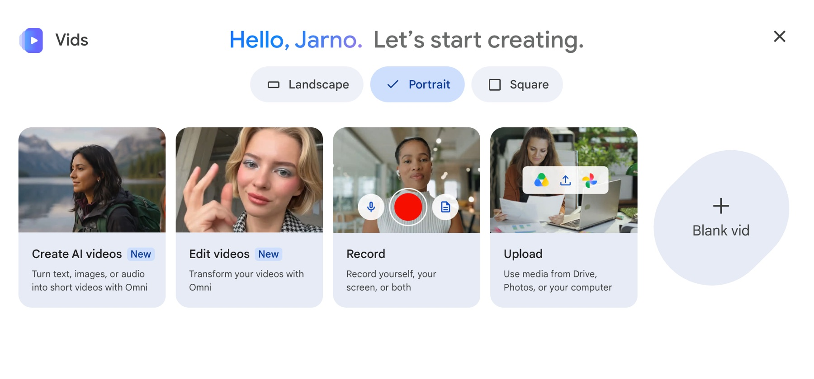
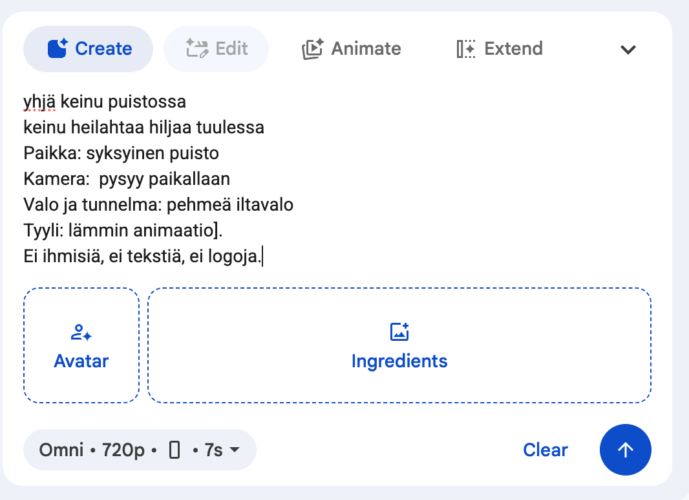
Hanki hahmon kuva
valitse yksi tapaA) Valokuvaa (ei kuluta kiintiötä): pehmolelu, figuuri, käsinukke tai esine pöydällä, vaalea tausta, hyvä valo. Valmis anonyymi hahmo.
B) Luo tekoälyllä (Vidsissä kuluttaa 1/5 kuukauden kuvista): käytä tätä promptia, niin onnistut ensimmäisellä kerralla. Kuvan voi tehdä myös toisessa tekoälyohjelmassa, esim. Google Geminissä tai ChatGPT:ssä – tallenna kuva koneelle ja lisää se Vidsiin viitekuvaksi. Sama prompti toimii niissäkin.
Tee klippi hahmolla
1 klippi = 1/20 kuukaudesta- Valitse otos ja avaa oikean reunan valikosta AI Video → Create.
- Raahaa hahmon kuva laatikon Ingredients-kohtaan. Se saa nimen @Image1. (Jos + Add ei toimi, raahaus toimii.)
- Tarkista asetukset: pystykuva, 10s. Kopioi prompti, täytä ja paina sinistä nuolta.
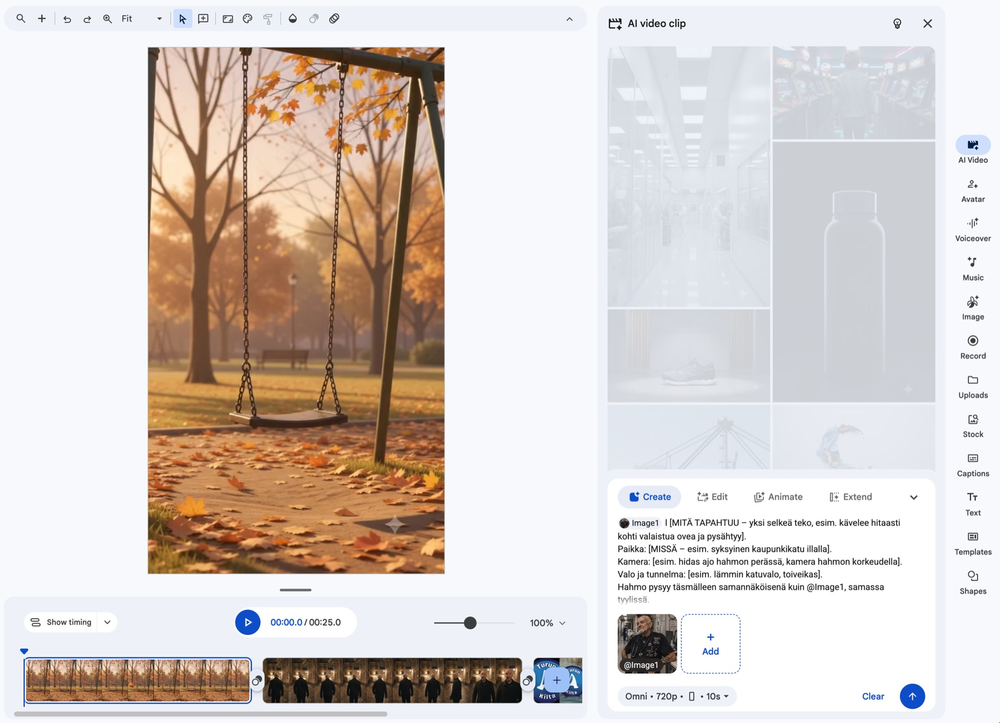
Lisää logo
valitse yksi tapaA) Tavallisena kuvana (ei kuluta kiintiötä): raahaa logo koneeltasi viimeiseen kohtaukseen. Jos logo on Google Drivessa, löydät sen oikean reunan valikosta Uploads (Drive & Photos). Logo pysyy tarkkana.
B) Osana kohtausta (kuluttaa klippikiintiötä): logo näkyy itse videossa, esim. suurella mainosnäytöllä kadulla. Create-laatikkoon voi lisätä enintään kolme kuvaa: raahaa ensin hahmo (@Image1) Ingredients-kohtaan, sitten logo (@Image2).
Tekoäly voi vääristää logon kirjaimia ja värejä. Tarkista tulos, ja jos logo ei pysy tarkkana, käytä tapaa A.
Muut kohtaukset voit kuvittaa arkistokuvilla ja -videoilla (oikean reunan valikosta Stock). Samasta paneelista löytyy myös musiikkia, tarroja ja äänitehosteita – nekään eivät kuluta kiintiötä.
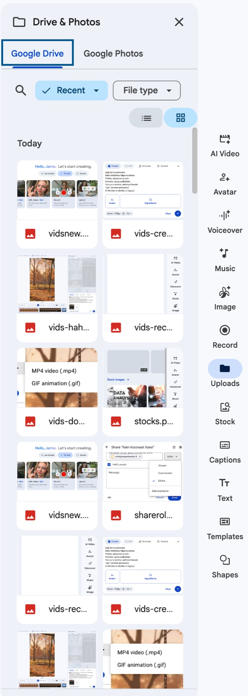
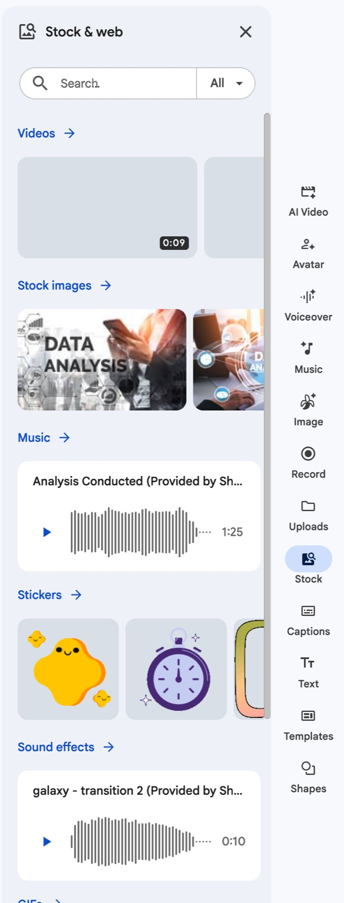
🐱 Nopeille: hauskat kokeilut
Hahmo järjestön paidassa
Raahaa viitekuviksi sekä hahmo (@Image1) että logo (@Image2): "@Image1 heiluttaa kättä, päällä paita jossa on @Image2-logo". Logo ei välttämättä pysy tarkkana – siksi tämä on kokeilu, ei loppukuva.
Oma kuva viitteeksi
Huvin vuoksi: lisää viitekuvaksi oma kasvokuvasi ja katso, miten malli sen tulkitsee. Ei järjestön julkiseen videoon.
Animate
Herätä valokuvattu pehmolelu henkiin: valitse Animate, lisää kuva ja kirjoita yksi liike, esim. "nostaa kättään ja katsoo kameraan".
- Avaa oikean reunan valikosta Record. Valitse ylhäältä Current scene (tämä kohtaus).
- Kirjoita kohtaukselle yksi tai kaksi lyhyttä lausetta kenttään Enter a script for this scene – teksti näkyy sinulle tallentaessa. Puhu niin kuin puhuisit katsojalle kahden kesken.
- Valitse Recording options -kohdasta Voiceover. Se tallentaa vain äänesi – kasvosi eivät näy.
- Paina Start recording. Äänitä hiljaisessa huoneessa, ja siirry seuraavaan kohtaukseen nuolella.
- Muut vaihtoehdot (Camera, Camera & screen, Screen) kuvaavat kamerasi tai näyttösi. Käytä niitä vain, jos haluat itse näkyä videossa.
- Kuuntele, ja tallenna tarvittaessa uudelleen – tämä ei kuluta kiintiötä.
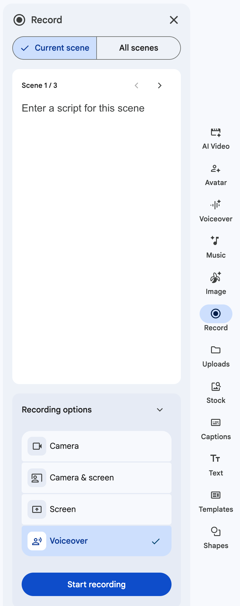
Captions
ei kuluta kiintiötäMoni katsoo somevideon ilman ääntä. Avaa oikean reunan valikosta Captions: Vids tekee tekstityksen automaattisesti myös suomenkielisestä puheesta. Valitse Apply to -kohdasta All scenes (koko video) tai Current scene (tämä kohtaus) ja sitten tyyli listasta. Katso tekstitys läpi ja korjaa väärin kuullut sanat.
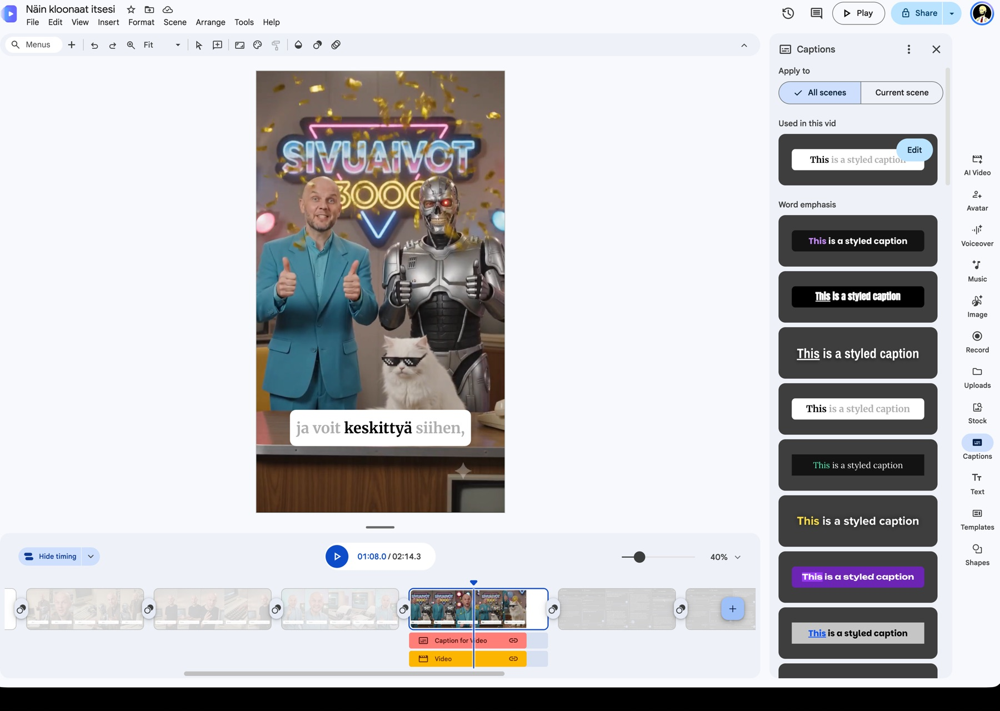
Show timing
ei kuluta kiintiötäPaina aikajanan vasemmasta reunasta Show timing. Kohtausten alle avautuu aikajana, jossa jokainen osa – tekstit, kuvat, tekstitys, video ja ääni – on omalla raidallaan. Siellä voit säätää, milloin mikin alkaa ja loppuu, esimerkiksi sovittaa oman äänesi kuvaan. Hide timing piilottaa aikajanan taas.
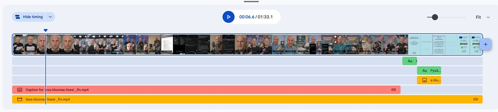
- Katso video kerran alusta loppuun ääni päällä ja kerran ilman ääntä (Play oikeassa yläkulmassa).
- Jaa työkaverille: Share → lisää vastaanottaja → valitse Viewer, Commenter tai Editor → Send.
- Lataa valmis video somea varten: File → Download → MP4 video (.mp4). Samasta valikosta voit viedä videon myös suoraan YouTubeen (Export to YouTube).
- Kerro julkaisussa, että video on tehty tekoälyn avulla. EU:n tekoälyasetus vaatii merkinnän erityisesti silloin, kun video näyttää todelta (esim. realistiset ihmiset tai tapahtumat), ja somealustat vaativat sitä omissa säännöissään. Selvästi piirretty hahmo ei lain mukaan vaadi merkintää – mutta avoimuus rakentaa luottamusta, joten merkitse aina.
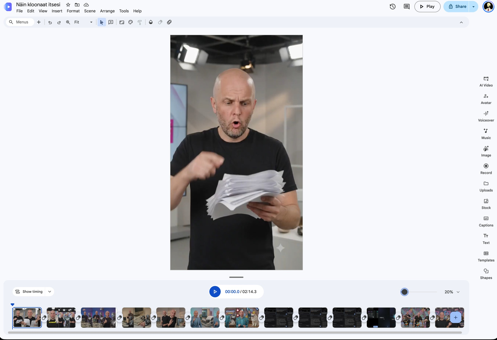
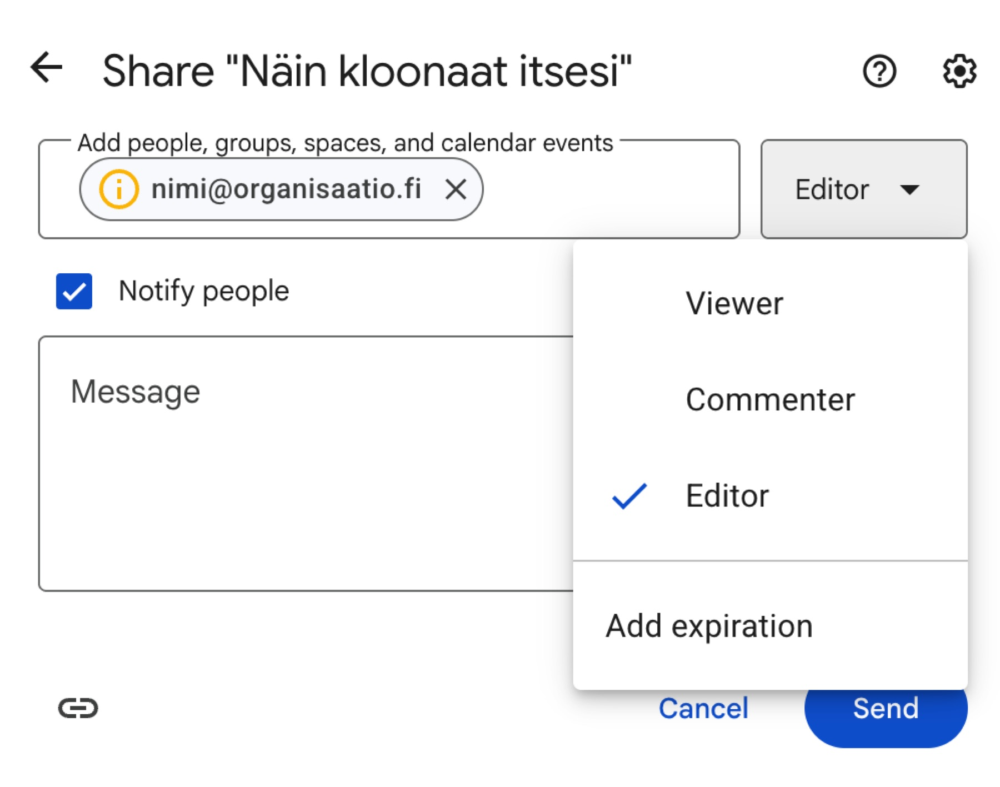
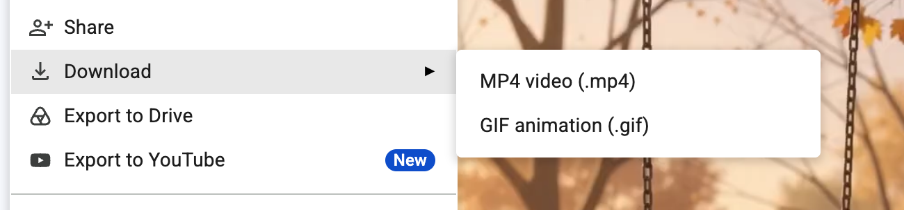
🌍 Yleisö voi reagoida tekoälyvideoon vahvasti
Kohdeyleisö voi suhtautua voimakkaasti siihen, että video on tehty tekoälyllä. Syitä on monia, ja yksi niistä on energiankulutus: arvioiden mukaan viiden sekunnin tekoälyvideo voi kuluttaa saman verran energiaa kuin mikroaaltouuni tunnissa.
Toisaalta tekoälyvideo voi joskus olla tehokkaampi tapa kuin tuottaa video itse kuvauksineen, matkoineen ja editointitunteineen – silloin saavutettu hyöty voi olla suurempi kuin energiankulutus. Asia ei ole mustavalkoinen. Mieti etukäteen, miten vastaat, jos joku kysyy. Suunnittelu ennen generointia säästää sekä kiintiötä että energiaa.
Lähde: UN University (UNU-INWEH), Environmental Cost of AI's Energy Use, 2026. Vertaile itse: AI Energy Calculator.
🔎 Gemini Notebook (entinen NotebookLM)
Gemini Notebookiin ladataan ensin oma aineisto, esimerkiksi järjestönne esittely tai toimintakertomus. Se vastaa vain sen pohjalta.
Aineiston kanssa voi keskustella, ja siitä voi luoda podcastin, esityksen, videon, raportin ja paljon muuta. Monet ominaisuudet ovat ilmaisia, mutta niissäkin on rajoituksia.
Lataa vain julkista aineistoa, ei henkilötietoja.
👉 Katso esimerkki: Gemini Notebook -demo
📌 Muista jatkossa
- Tarina ensin. Suunnittele kohtaukset ennen kuin luot klippejä – kiintiö on 20 klippiä ja 5 kuvaa kuukaudessa.
- Hahmo viitekuvana. Sama @Image1 jokaisessa klipissä pitää hahmon samana.
- Logo: tavallisena kuvana pysyy tarkkana eikä kuluta kiintiötä. Kohtauksen osana (@Image2) se kuluttaa kiintiötä, joten tarkista, että logo pysyi oikeannäköisenä.
- Oma ääni suomeksi – tekoälyselostus ei tue suomea. Tekoälyklipin hahmo voi sanoa lyhyen repliikin suomeksi, mutta ei aina sanatarkasti.
- Ei henkilötietoja, ei tunnistettavia ihmisiä ilman lupaa.
Yhteistyössä
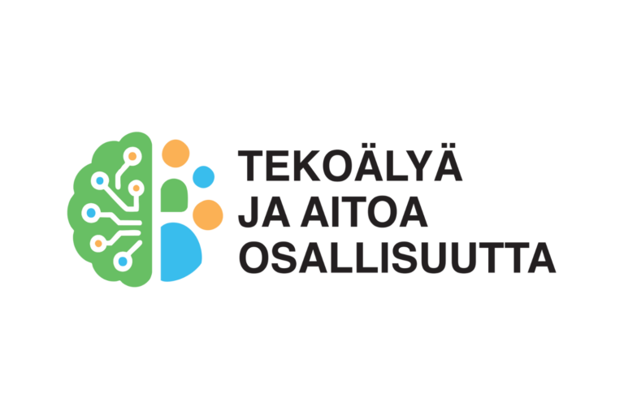
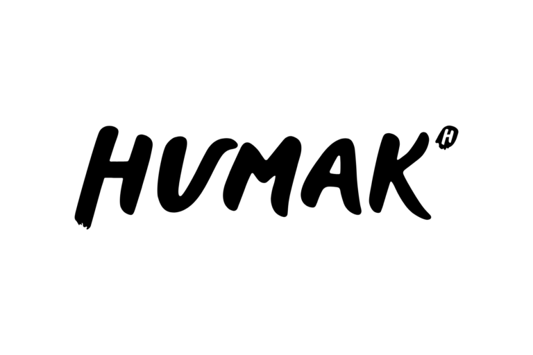
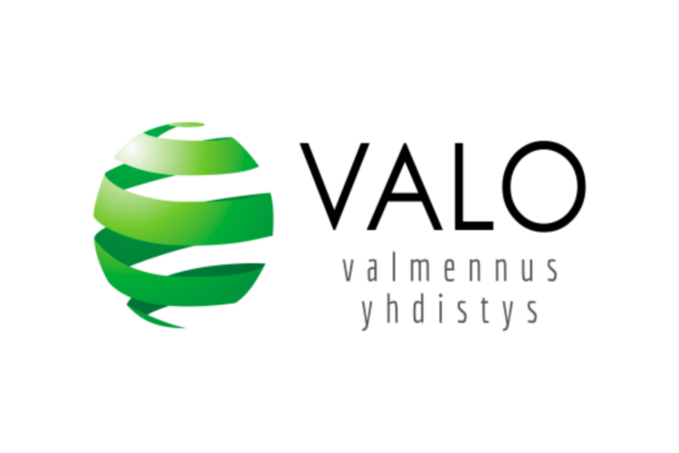
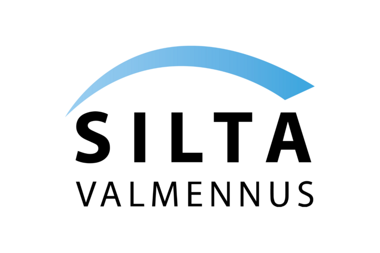
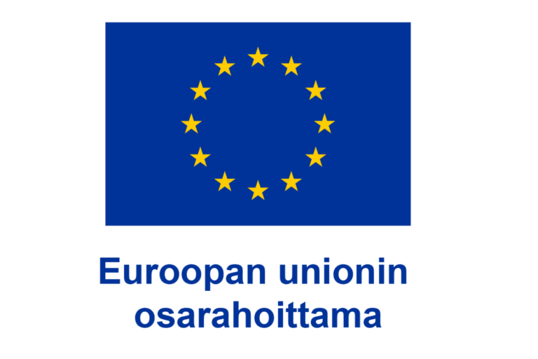
Aineisto on vapaasti järjestöjen ja yhdistysten käyttöön omassa toiminnassaan (CC BY-NC 4.0) — ei kaupalliseen käyttöön ilman lupaa. Kiintiöt: Googlen tiedot 10/2026, tarkista ajantasaiset Googlen ohjeesta.